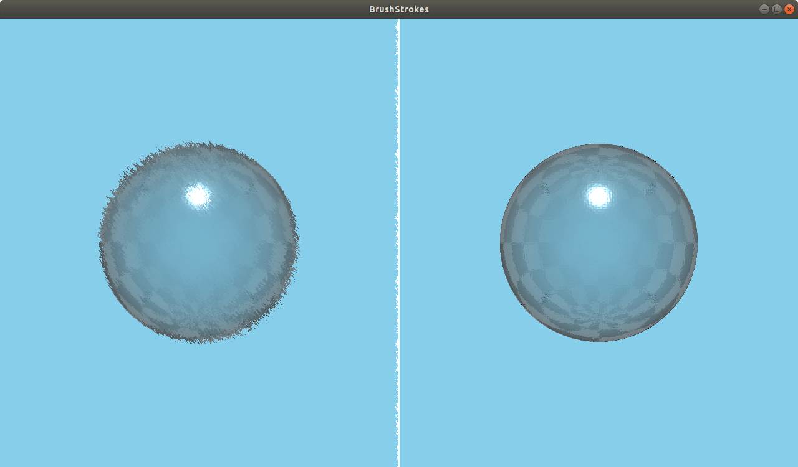

BrushStrokes QML Type
A brush strokes noise effect. More...
| Import Statement: | import QtQuick3D.Effects 1.15 |
Properties
- brushAngle : real
- brushLength : real
- brushSize : real
- noiseSample : TextureInput
Detailed Description

The BrushStrokes effect simulates an artistic painting of the image.
Property Documentation
brushAngle : real |
Amount to rotate the brush noise texture. 45 by default.
brushLength : real |
How far to offset the image with the brush. Sensible values are in the range [0...3]. 1 by default.
brushSize : real |
Scale of the brush. Smaller values yield larger sizes. Sensible values are in the range [10...200]. 100 by default.
noiseSample : TextureInput |
The brush noise texture map. Default is a Texture with source "maps/brushnoise.png".